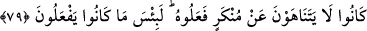
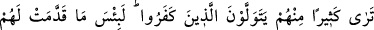
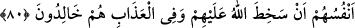
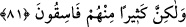

79. Onlar, işledikleri kötülükten birbirlerini menetmezlerdi. Andolsun yaptıkları
ne kötüdür!
“Onlar, işledikleri kötülükten birbirlerini menetmezlerdi.” Yani, bazısı bazısını
yaptıkları çirkin fiillerden alıkoymazdı. Onlar kötülükten menetmemeyi âdet
edinmişlerdi. “Andolsun yaptıkları ne kötüdür!” Doğrusu bu kötü fiilleri şaşılacak bir
durumdur.
80. Onlardan çoğunun, inkâr edenlerle dostluk ettiklerini görürsün. Gerçekten
nefislerinin kendileri için yapıp gönderdiği ne kötüdür. Allah onlara gazâb etmiştir
ve onlar azap içinde devamlı kalacaklardır!
“Onlardan çoğunun”, Yani ehl-i kitaptan Ka’b b. Eşref ve benzerlerinin “inkar
edenlerle dostluk ettiklerini” Yani, Rasûlullah (s.a.) ve mü’minlerden nefretleri
sebebiyle müşriklerle dostluk kurduklarını “görürsün.” Nitekim bu kimseler Hz.
Peygamber (a.s.) ile savaş konusunda ittifak kurmak için Mekke müşriklerinin yanına
gitmişlerdir.
“Gerçekten nefislerinin” kıyâmette karşılığını görmek üzere “kendileri için yapıp
gönderdiği ne kötüdür.” İşte bu yüzden “Allah onlara gazâb etmiştir ve onlar azap
içinde devamlı kalacaklardır.”
81. Eğer onlar Allah’a, Peygamber’e ve ona indirilene îman etmiş olsalardı onları
(müşrikleri) dost edinmezlerdi; fakat onların çoğu yoldan çıkmış insanlardır.
“Eğer onlar” ehl-i kitaptan müşriklerle dostluk edenler “Allah’a ve” kendi
peygamberleri Îsâ veya Mûsâ “Peygamber’e ve ona indirilene” Tevrat veya İncil’e
“îman etmiş olsalardı onları” yani müşrikleri “dost edinmezlerdi.” Çünkü bunun
haram olduğu kendi peygamberlerinin şerîatında ve ona indirilen kitapta apaçık
bildirilmişti. Şu halde îman müşriklerle dostluğa kesin olarak mânidir.
“Fakat onların çoğu yoldan çıkmış insanlardır.” Dinden; Allah’a, peygamberlerine
ve kitaplarına îmandan çıkmış azgın bir topluluktur.